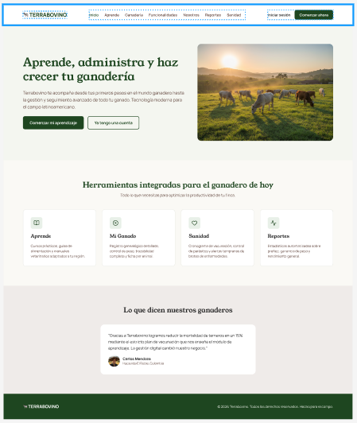
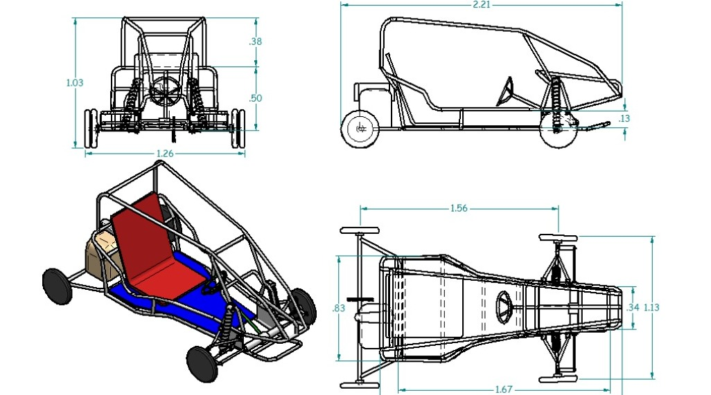

Caracteristicas
Permite registrar y realizar seguimiento de los bovinos,
su creciemiento, peso, raza y estado
Permite administrar potreros, alimentacion, insumos,
produccion y actividades de la finca
Facilita consultar informacion, llevar historiales y generar reportes
para apoyar la toma de decisiones.

Caracteristicas
Se le proporciono un refuerzo y mejora en el chasis del vehiculo
se le proporciono una protecion a decuada al conductor con una haula
antihuelco